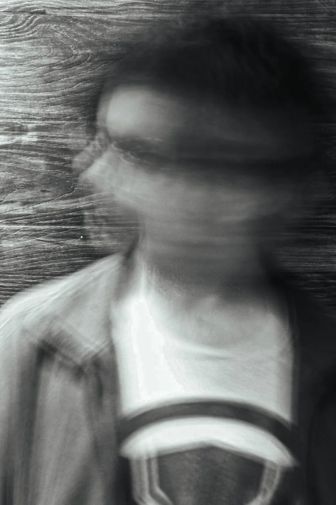
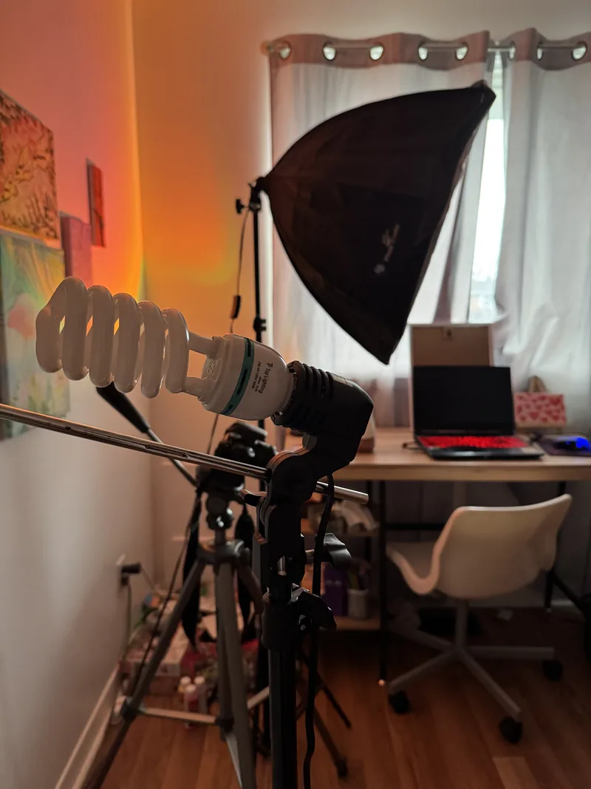
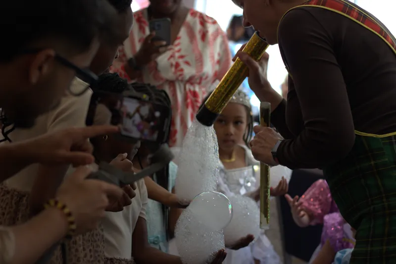
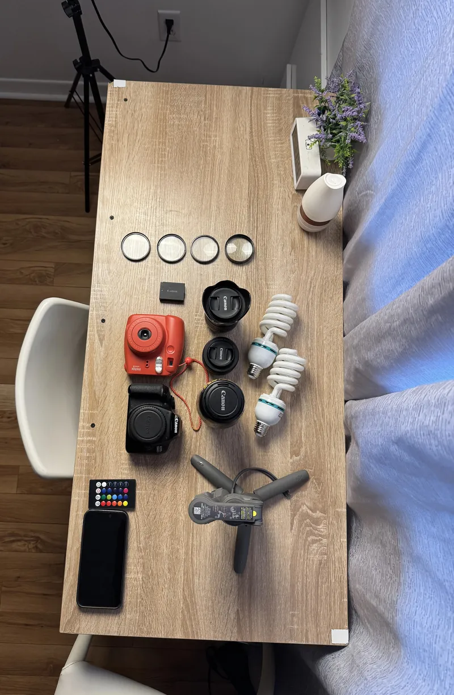
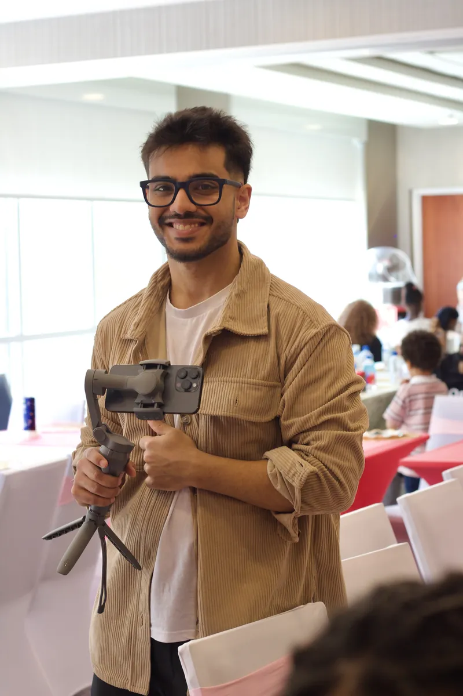

Portraits
Individuals, couples, families and pets.
See portraits →
that's me, mid-motion
I picked up my first camera, a Canon 1300D, in Grade 8. That was eight years ago, and I haven't put one down since.
I learned the camera first, then everything that makes a photo work: story, composition, colour, light and shadow. I'm a very visual person, and photography became the way I show people how I see the world.
Client shoot or personal project, photography keeps me present. It lets me hold on to a moment exactly the way I saw it.
My style leans dramatic. I shape a scene with natural light and shadow, and I go looking for the small details most people walk past. I also love to experiment: long exposures, black and white, telephoto and more!
Portraits are a different beast. It's more than taking someone's picture. It's helping them feel comfortable in their own skin, guiding their poses and catching them at their best. Plenty of people are camera-shy, and getting them past that is part of my job.

the studio
Once I started photographing people, I realized how much a photo can mean to someone. I've captured babies, couples, families and big gatherings across the GTA region.
Holding on to someone's memories is a real responsibility, especially on a once-in-a-lifetime day like a wedding. I take the time to understand what you're picturing, then deliver photos you'll actually love. Watching a client light up at their gallery is still the best feeling there is.


the kit

Individuals, couples, families and pets.
See portraits →Candid coverage of the day as it happens.
See events →Cars up close: the details, the shine, the character.
See automotive →Styled and experimental shoots.
See creative →Birds, insects, flowers and whatever sits still long enough.
See wildlife →Packages on request. Based in Brampton, shooting across Toronto and the GTA. Further out? Just ask.